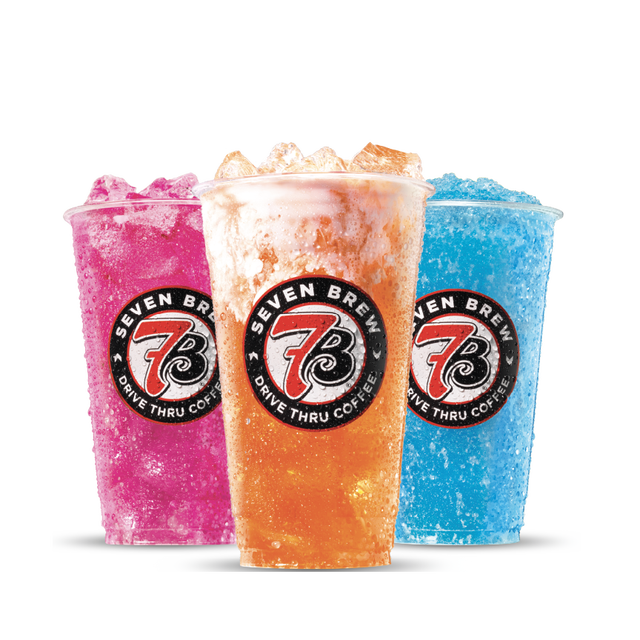

Independent 7 Brew menu guide · Reviewed September 9, 2026
7 Brew Fizz Menu: Flavors & Fizz vs. Energy
7 Fizz and 7 Energy are different drink bases. Say which base you want even when using a familiar flavor-combination name.

Choose your drink
7 Fizz and 7 Energy are different drink bases. Say which base you want even when using a familiar flavor-combination name.
Pink Mermaid combines strawberry, watermelon and coconut. Ask for the Fizz preparation when that is the drink you mean.
Complete 7 Fizz Flavor List
| Drink | Listed flavor combination |
|---|---|
| Blood Orange 7 Fizz Soda | Orange + Pomegranate |
| Pink Mermaid 7 Fizz Soda | Watermelon + Coconut + Strawberry |
| Peaches N' Cream 7 Fizz Soda | Peach + Vanilla |
| Brew Lagoon 7 Fizz Soda | Lime + Blue Raspberry + Coconut |
| Cherry Blossom 7 Fizz Soda | Cherry + Peach |
| Tiki Tango 7 Fizz Soda | Passion Fruit + Pineapple |
| Stargazer 7 Fizz Soda | Lime + Blue Raspberry |
| Dragons Blood 7 Fizz Soda | Blue Raspberry + Cherry |
| Bahama Mama 7 Fizz Soda | Cherry + Coconut |
| Midnight Rain 7 Fizz Soda | Blackberry + Blue Raspberry |
Source: official menu, checked September 21, 2026. This is a catalog snapshot, not live stock at every stand.
Customizing your order
Do not order an Energy drink assuming it is the same as a Fizz. For caffeine or ingredient questions, use the exact base and recipe in the official guide.
Tell the stand the drink base, size, flavor combination and any requested adjustments. Ask about availability before assuming a flavor or topping can be substituted. Browse flavor and sweetness options.
Nutrition and prices
Match your drink to the official nutrition guide for the chosen serving and preparation. Ask the stand about recipes not covered there. Current prices depend on the selected location and order; confirm in the official app or at the stand.
Continue exploring
What Are 7 Brew Fizz Drinks?
7 Brew Fizz drinks are the chain's take on Italian soda sparkling drinks — a fruity sparkling beverage — carbonated water combined with Torani-style flavoring syrups to create carbonated fruit flavored drinks and, optionally, a splash of cream. Unlike the 7 Energy line, Fizz drinks are a caffeine-free refreshment, making them a popular kid-friendly drink choice for children, caffeine-sensitive customers, and anyone who wants a refreshing soda alternative to coffee. The menu includes flavors like Blood Orange, Brew Lagoon, Peaches N Cream, and Pink Mermaid, each available in all three cup sizes.
The key difference between Fizz and 7 Energy is the base: Fizz uses plain sparkling water, while Energy adds caffeine, taurine, and B-vitamins. If you want the sparkling texture with a caffeine kick, order a Fizz + Energy hybrid — the barista combines both bases. This combo is one of the most popular secret menu hacks.
Best Fizz Flavor Combinations
The standard Fizz menu is a starting point — most regulars customize their orders with extra syrup shots or cream additions. Top-selling combinations include the Peaches N Cream Fizz with a vanilla cream topping float, the Pink Mermaid with coconut syrup, and the Blood Orange Fizz with a splash of raspberry. You can swap any syrup to sugar-free at no charge. For calorie counts by size and flavor, use the nutrition calculator.
Fizz drinks are also the lightest option on the menu calorie-wise — a standard Fizz without cream runs under 100 calories in a small. Compare that to a breve-based Blondie or Brunette, which start around 400 calories due to the half-and-half base. For a full comparison, see the best drinks guide or browse the complete menu.
Fizz as a Summer Iced Cold Drink
When temperatures climb, 7 Brew Fizz drinks are the perfect summer iced cold drink. Served over ice in 16 oz, 24 oz, or 32 oz cups, these bubbly refreshers are light, fruity, and endlessly customizable. Popular warm-weather picks include cherry lime blue raspberry combinations, tropical blends with coconut and mango syrups, and the classic Blood Orange Fizz. Since every Fizz is caffeine-free, they are also ideal for evening drive-thru runs or for anyone limiting their daily caffeine intake. Pair a Fizz with a snack at the window for a quick, refreshing treat. See our calorie calculator for nutrition details on every Fizz flavor, or explore the lemonade menu and smoothie and shake lineup for more non-coffee options.
Every 7 Fizz soda
Per-flavour pages with calories, sugar and prices by size.